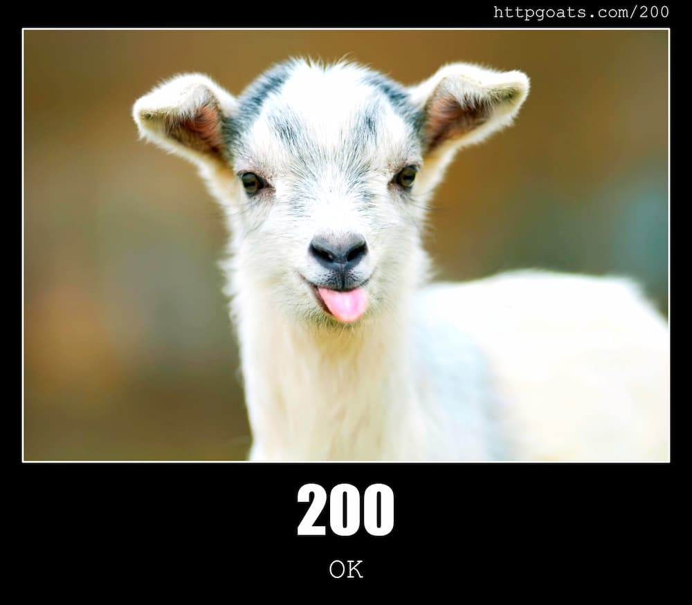

  GNU nano 6.2                       index.html                                 
<!DOCTYPE html>
<html lang="en">
<head>
    <meta charset="UTF-8">
    <title>Mini CDN Home</title>
</head>
<body>
    <h1>Welcome to the Mini CDN!</h1>
    <p>This is a working page served with HTTP 200 OK.</p>
    
</body>
</html>
